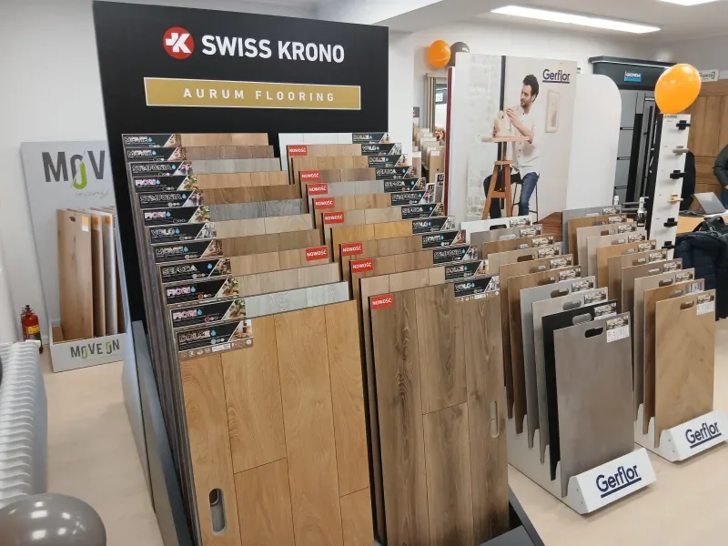
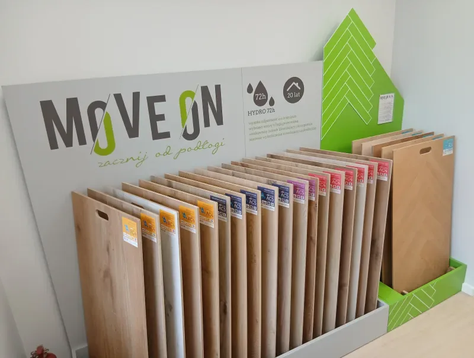
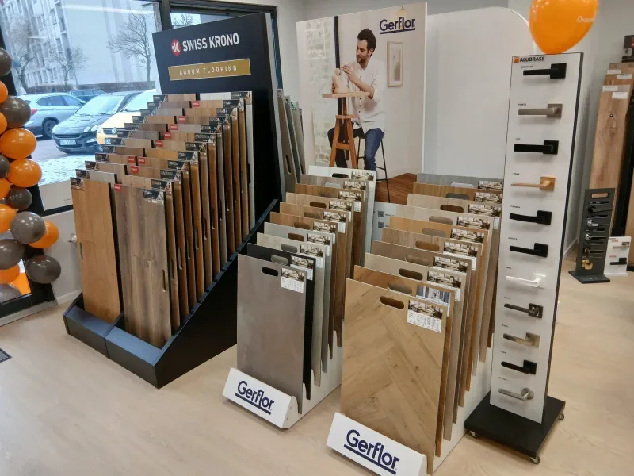
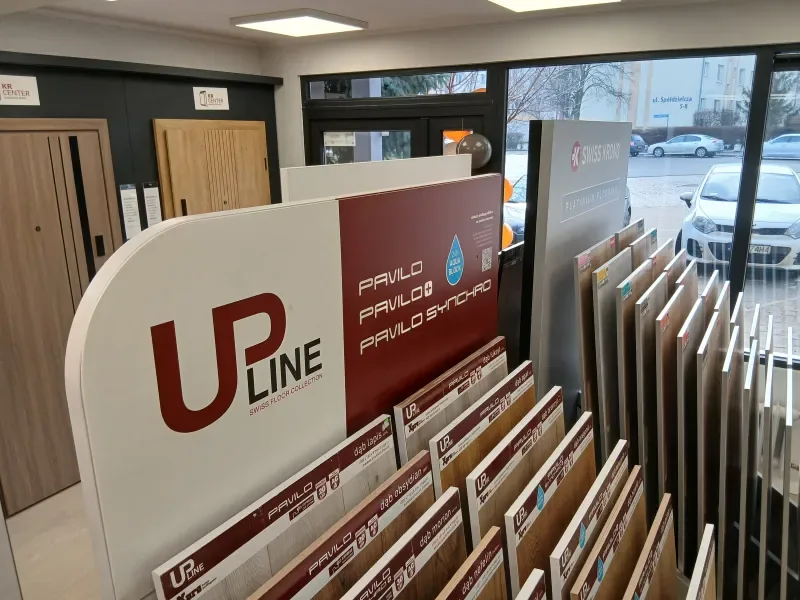
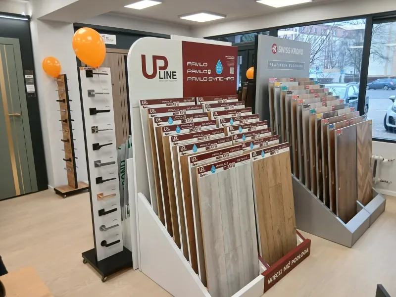
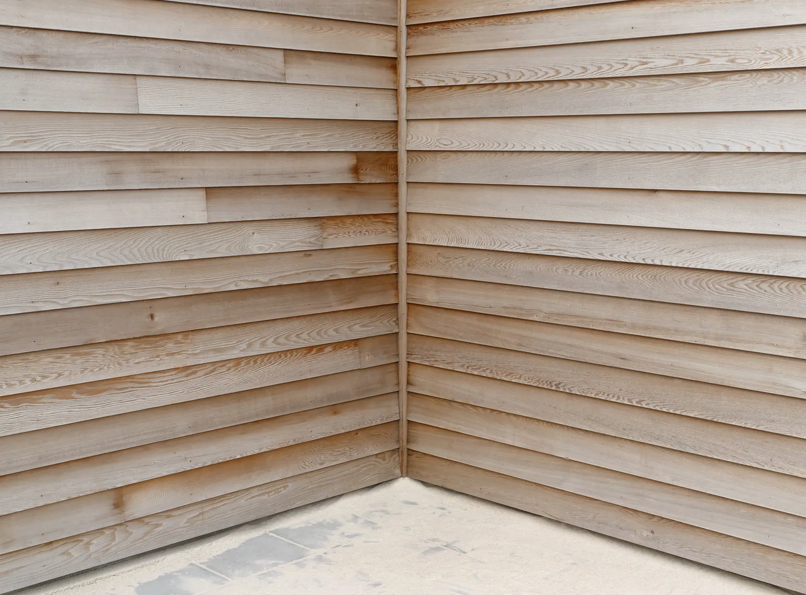
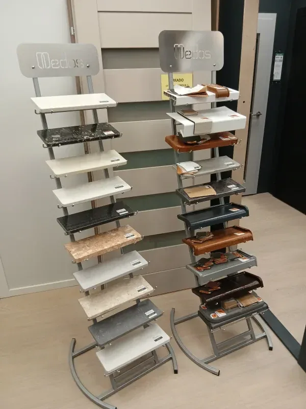
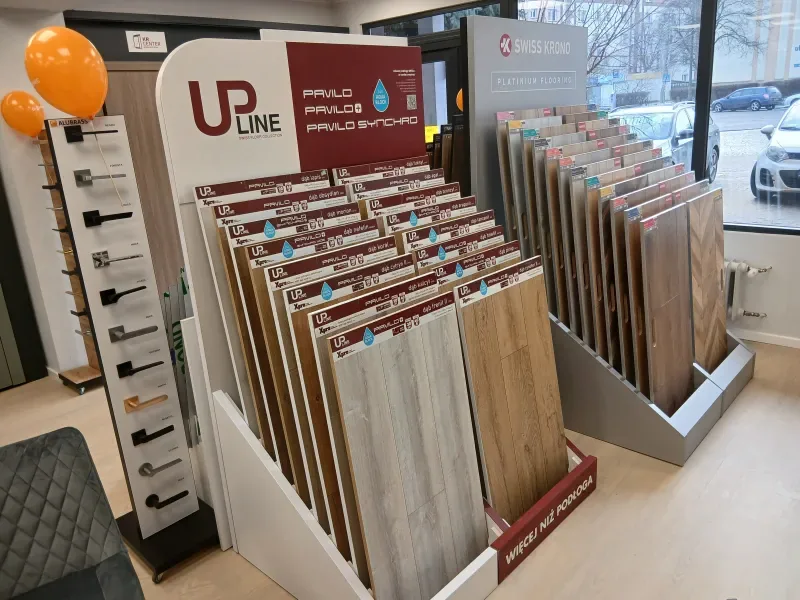

Panele podłogowe i ścienne w Głogowie
Panele laminowane, podłogi winylowe i drewniane, panele ścienne i deski tarasowe. Wzorniki na ekspozycji, doradztwo i montaż.
781 790 030
Panele podłogowe laminowane
Twarde, odporne na ścieranie i dostępne w wielu wzorach i kolorach – od dekorów inspirowanych naturalnym drewnem po wyraziste wzory do nowoczesnych wnętrz. Dobry wybór do salonu, sypialni i pokoju dziecka.
- Dekory drewna i kamienia
- Różne klasy ścieralności
- Podkłady i listwy do kompletu
Na ekspozycji m.in. Swiss Krono.

Podłogi winylowe LVT
Cieplejsze w dotyku i cichsze od laminatu, pasują do praktycznie każdego stylu. Sprawdzają się w kuchni i przedpokoju. Przy pomieszczeniach o podwyższonej wilgotności zawsze sprawdzamy parametry i przeznaczenie konkretnego produktu.
- Wersje klejone i na zatrzask
- Na ogrzewanie podłogowe – zgodnie z kartą produktu
- Dekory drewna i kamienia
Na ekspozycji m.in. Gerflor.


Podłogi drewniane
Naturalne drewno do wnętrz, które mają być przytulne na lata. Każda deska ma inne usłojenie, dlatego warto ją obejrzeć na żywo i porozmawiać z doradcą o wykończeniu i pielęgnacji.
- Deski warstwowe i lite
- Wykończenie olejowane lub lakierowane
- Listwy w kolorze podłogi
Panele ścienne
Efektowna ściana za łóżkiem, telewizorem albo w przedpokoju bez kucia i tynkowania. Panele i listwy dobierzesz w salonie razem z podłogą, żeby całość tworzyła jedną aranżację.
- Panele dekoracyjne i lamele
- Listwy ścienne i przypodłogowe
- Montaż na klej lub system listew

Deski tarasowe
Kompozytowe, które nie wymagają olejowania, i drewniane dla miłośników naturalnego materiału. Doradzimy też legary i sposób montażu.
- Deski kompozytowe
- Deski drewniane
- Legary, klipsy i listwy maskujące

Listwy, podkłady i klamki
Wszystko, czego potrzeba do wykończenia podłogi i drzwi: listwy przypodłogowe, progi, podkłady pod panele, klamki i wkładki.
- Listwy przypodłogowe i progi
- Podkłady pod panele
- Klamki i akcesoria do drzwi


Panele winylowe czy laminowane?
| Cecha | Panele laminowane | Podłogi winylowe |
|---|---|---|
| Wilgoć | Ograniczona odporność, zależy od modelu | Lepiej ją znoszą – kuchnia, przedpokój |
| W dotyku | Twarde i chłodniejsze | Cieplejsze i bardziej sprężyste |
| Akustyka | Głośniejsze, warto dobrać dobry podkład | Cichsze przy chodzeniu |
| Ogrzewanie podłogowe | Tak, jeśli dopuszcza producent | Tak, jeśli dopuszcza producent |
| Gdzie najczęściej | Salon, sypialnia, pokój dziecka | Kuchnia, przedpokój, poddasze |
Ostatecznie decydują parametry konkretnego modelu – sprawdzimy je z Tobą w salonie.
Pytania o podłogi
Panele winylowe czy laminowane – które lepsze?
To zależy od pomieszczenia. Laminat jest twardy i odporny na ścieranie, dobry do salonu i sypialni. Winyl jest cieplejszy w dotyku, cichszy i lepiej znosi wilgoć, dlatego częściej trafia do kuchni i przedpokoju. W salonie porównasz oba na wzornikach.
Jakie panele na ogrzewanie podłogowe?
Zarówno panele laminowane, jak i winylowe mogą leżeć na ogrzewaniu podłogowym, jeśli producent dopuszcza taki montaż. Sprawdzamy to w parametrach konkretnego modelu i dobieramy właściwy podkład.
Panele winylowe czy laminowane do kuchni?
Do kuchni częściej polecamy winyl, bo lepiej znosi wilgoć. Przy każdym modelu sprawdzamy jednak, czy producent dopuszcza go do pomieszczeń o podwyższonej wilgotności.
Czy mogę zobaczyć próbki przed zakupem?
Tak. W salonie przy ul. 1 Maja 16 są wzorniki paneli laminowanych, podłóg winylowych i listew. Odcień i struktura wyglądają na żywo inaczej niż na zdjęciu.
Czy montujecie podłogi?
Tak, oferujemy profesjonalny montaż. Zapytaj doradcę w salonie lub zadzwoń – ustalimy pomiar pomieszczeń i dogodny termin.
Czy mogę zamówić panele bez ponownej wizyty?
Tak. Jeśli byłeś już w salonie i masz wybrane produkty, zamówisz je telefonicznie lub mailowo.
Przyjdź po próbki
Salon przy ul. 1 Maja 16 w Głogowie, pon.–pt. 9:00–17:00.